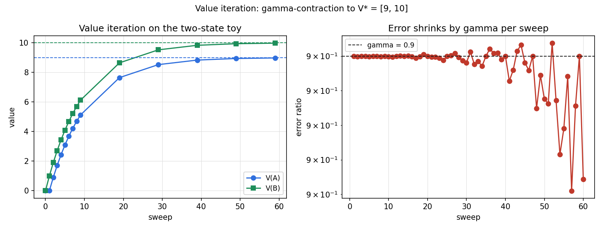
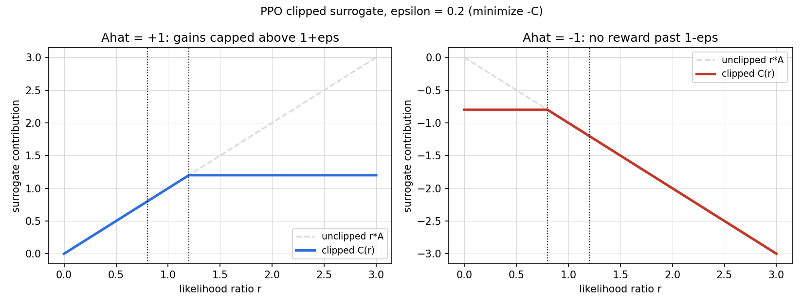

Lesson 15 · Reasoning, RL foundations
Lesson 15, reasoning and reinforcement learning foundations
Unit: cs229-U15. Leaf concepts: cs229-U15-C01 to C12 (reasoning traces, long-form RLVR, reward validity, MDP, Bellman equations, value iteration, policy iteration, model estimation, exploration, continuous state, discretization, value approximation, source/reward confounding). Date: 2026-10-06. Baseline: October 6, 2026.
Source mapping
Chapter 18, Reasoning in LLMs (SRC-01, PDF pages 221-226) was read in full on 2026-10-06: chain of thought (18.1), RLVR with long chain-of-thought reasoning (18.2) with the o1 and DeepSeek-R1-Zero scaling plots (Figure 18.1), the finite-horizon token MDP formulation (18.1-18.2), the KL-regularized objective (18.2), token-level PPO (18.4-18.6), GRPO (18.7-18.8), and CISPO (18.9). Chapter 19, Reinforcement learning (SRC-01, PDF pages 228-243) was read in full on 2026-10-06: MDP definition and dynamics (19.1), value and optimal value functions with Bellman equations (19.1), value iteration and policy iteration with synchronous and asynchronous updates (19.2), model estimation from counts (19.3), continuous-state MDPs with discretization (19.4.1) and value function approximation with fitted value iteration (19.4.2), and the policy/value iteration connection (19.5). Lecture 16 transcript covers RL basics (SRC-02), header inspected, content not read in depth. Boundaries: (a) “reward validity” and “source/reward confounding” are not named in the notes. They are taught as standard-background bridges on the notes’ own verifier discussion (18.2) and the KL penalty (18.2). (b) Exploration theory beyond the notes’ learn-then-plan loop (19.3) is standard background. (c) Lecture 17 transcripts cover policy gradient and PPO, they belong to U16. Leaf rows carry SOURCE ATTRIBUTION PENDING until the RUN 6 pass.
Scope and objectives
Scope: how language models reason in explicit traces, how RLVR trains such traces with verifiable rewards, and the classical RL foundation under both: MDPs, Bellman equations, value and policy iteration, model learning from data, and the continuous-state methods (discretization, value approximation).
Objectives: the learner can (1) explain why intermediate tokens help an autoregressive model, (2) write the RLVR objective with its KL penalty, (3) compute a GRPO advantage from a group of completions, (4) state the MDP tuple and the two Bellman equations, (5) run value iteration on a toy MDP by hand, (6) estimate transition probabilities from count data, (7) explain the curse of dimensionality with the 100^10 example, and (8) state why a verifier reward can misalign with the real task goal.
Dependencies
Prerequisites: P06, P17 (shared bridges, linked). Unit U07 (neural nets), Unit U14 (LLMs, autoregressive factorization).
Not-yet-understood list:
- Why the token MDP needs no discount (remediated in SL-03).
- Why value iteration converges while fitted value iteration has no such guarantee (remediated in SL-10).
SL-01: Reasoning traces
Covers C01 (reasoning traces).
Source anchor
SRC-01 section 18.1, pages 221-222. A chain-of-thought (CoT) prompt asks the model to write intermediate steps before the final answer. The notes’ example: Roger starts with 5 tennis balls and buys 2 cans with 3 balls each. The trace is “2 x 3 = 6, 5 + 6 = 11”, the answer is a = 11.
Mental model
An autoregressive model predicts one token at a time. A direct answer is one hard prediction. A trace turns it into a sequence of smaller predictions. The extra tokens buy two things: more compute (more time to think) and more memory (a place to log intermediate results). Later tokens condition on earlier partial computations.
Few-shot and zero-shot CoT
Few-shot CoT: each in-context demonstration is (x, z, a): input, trace, answer. The prompt concatenates m such triples and the query x. The model continues with a new trace z and answer a. Wei et al. [2022] report that for large enough models this improves arithmetic, symbolic, and commonsense reasoning over answer-only prompts.
Zero-shot CoT: no demonstrations. Append an instruction such as “Let us think step by step” [Kojima et al., 2022]. Useful when hand-written traces are expensive or one template must serve many task types.
Correctness checks
- The trace must precede the answer. A trace after the answer cannot change the prediction it explains.
- Trace tokens condition later tokens. Test: truncate the trace and check the answer changes.
Nearest alternative
Answer-only prompting. Cheaper in tokens, weaker on multi-step tasks.
Failure case
A trace that reads well but does not drive the answer: the model writes plausible steps then ignores them. The truncation test above catches it.
SL-02: RLVR with long chains of thought
Covers C02 (long-form RLVR).
Source anchor
SRC-01 section 18.2, pages 222-226. Prompting elicits traces. RLVR trains them. The problem: step-by-step supervision is expensive. The opening: in many domains the final answer is checkable automatically. Math has a known answer. Code has unit tests. Theorems have a proof checker. Structured output has a deterministic validator.
The formulation
Let x be a prompt from a distribution D. Let y = (y_1, …, y_T) be a response with a chain of thought and a final answer. A verifier produces a scalar reward R(x, y) in [0, 1]. Example: R(x, y) = 1 if the extracted final answer is correct, 0 otherwise, with format penalties as needed.
View autoregressive generation as a finite-horizon MDP (Chapter 21). At token position t the state is the prefix s_t = (x, y_{<t}). The action is the next token a_t = y_t, sampled from the policy pi_theta(a_t | s_t) = p_theta(y_t | x, y_{<t}). The transition is deterministic: s_{t+1} = (x, y_{<=t}). The episode ends at the end-of-sequence token or a length limit. The verifier gives the terminal reward R(x, y). All intermediate rewards are zero. The objective:
J_R(theta) = E_{x~D, y~pi_theta(.|x)} [R(x, y)]. (18.1)
The common regularized objective adds a KL penalty to keep the policy near a reference model:
J_beta(theta) = J_R(theta) - beta E_{x~D}[D_KL(pi_theta(.|x) || pi_ref(.|x))]. (18.2)
Here pi_ref is usually the initial SFT or instruction-tuned model. The KL term stops the policy from drifting far from a capable language model while the verifier reward pushes it toward completions that solve the task.
The two scaling axes
The notes report two empirical patterns. OpenAI’s o1 report: reasoning accuracy improves with more RL train-time compute and with more test-time thinking compute [OpenAI, 2024]. DeepSeek-R1: DeepSeek- R1-Zero improves during RLVR training and produces longer traces as training progresses [DeepSeek-AI, 2025]. The notes plot both in Figure 18.1: AIME pass@1 against training steps, and average response length rising with the accuracy curve. Boundary: these are source-reported empirical plots, not numbers reproduced here.
Correctness checks
- The reward must come from the verifier, not from a learned proxy. A learned proxy reintroduces the supervision problem RLVR avoids.
- The terminal reward is the only task signal. If intermediate rewards are added, the MDP formulation changes.
Nearest alternative
Distilling traces from a stronger teacher (SFT on teacher traces). Needs a strong teacher, inherits its biases.
Failure case
The verifier checks format only and the model learns fluent empty traces. The answer never gets checked. This is the reward-validity problem of SL-03.
SL-03: Reward validity
Covers C03 (reward validity).
Source anchor
SRC-01 section 18.2, pages 222-223. Boundary: the term “reward validity” is not in the notes. The content below is standard background built on the notes’ verifier discussion and the KL penalty (18.2).
Mental model
The verifier defines the reward. The model optimizes the reward. If the verifier and the true task goal differ, the model optimizes the difference. Three validity checks: (1) the verifier must test the real property (answer correctness, tests passing), not a proxy (answer present, tests exist). (2) The verifier must be hard to game: unit tests with hidden cases beat tests the model can memorize. (3) The reward range must be sane: the notes use R(x, y) in [0, 1] plus format penalties, so no single format quirk dominates the correctness signal.
The KL penalty as a guardrail
The KL term in (18.2) is the notes’ own guardrail: it penalizes drift from pi_ref. Without it, the policy can exploit verifier quirks (reward hacking) even when the verifier is reasonable. The penalty does not fix a broken verifier. It limits how far the model travels to exploit it.
Correctness checks
- Swap in a stricter verifier (more hidden tests) and check the learned behavior changes. If it does not, the model fit the loose verifier.
- Monitor KL from pi_ref during training. A spike with rising reward is a hacking signature.
Nearest alternative
Human preference rewards (RLHF). The verifier is a human judge. Broader tasks, noisier and more expensive signal.
Failure case
The verifier accepts any answer in the right format. RLVR then trains a model that writes long confident traces and wrong answers. The reward curve looks good. The task metric does not.
SL-04: The MDP
Covers C04 (MDP).
Source anchor
SRC-01 section 19.1, pages 228-230. A Markov decision process is a tuple (S, A, {P_sa}, gamma, R).
- S: set of states. Example: all positions and orientations of a helicopter.
- A: set of actions. Example: control stick directions.
- P_sa: transition probabilities. For state s and action a, P_sa is a distribution over next states.
- gamma in [0, 1): discount factor.
- R: S x A -> R, the reward function. The notes often use the simpler R: S -> R.
Dynamics
Start in s_0. Choose a_0. The next state s_1 is drawn from P_{s_0 a_0}. Choose a_1. Draw s_2 from P_{s_1 a_1}. Continue. The total payoff along a trajectory is
R(s_0, a_0) + gamma R(s_1, a_1) + gamma^2 R(s_2, a_2) + …
The goal: choose actions over time to maximize the expected total payoff. The discount makes early rewards worth more than late ones. In economic terms gamma encodes an interest rate.
Policy and value
A policy pi: S -> A maps states to actions. The value function of pi is
V^pi(s) = E[R(s_0) + gamma R(s_1) + gamma^2 R(s_2) + … | s_0 = s, pi].
It is the expected discounted return starting from s and following pi.
Computed example
Two states: A (start), B (goal). One action. From A you reach B with probability 1. B is an absorbing state: you stay in B. R(A) = 0, R(B) = 1, gamma = 0.9. Then V(B) = 1 + 0.9 + 0.9^2 + … = 1 / (1 - 0.9) = 10. V(A) = 0 + 0.9 * 10 = 9. The script verifies these numbers by simulation.
Correctness checks
- Probabilities in each P_sa must sum to 1. Check the rows.
- gamma must be below 1 for the infinite sum to converge with bounded rewards.
Nearest alternative
A bandit: one state, no transitions. MDP machinery is overkill there.
Failure case
The Markov property fails: the next state depends on history, not just (s, a). Then P_sa is the wrong object and Bellman equations do not hold.
SL-05: Bellman equations
Covers C05 (Bellman equations).
Source anchor
SRC-01 section 19.1, pages 230-231. For a fixed policy pi, the value function satisfies
V^pi(s) = R(s) + gamma sum_{s’} P_{s pi(s)}(s’) V^pi(s’). (Bellman)
Read it as: immediate reward plus the discounted expected value of wherever you land next. In a finite-state MDP this is |S| linear equations in |S| unknowns: solvable directly.
The optimal value function
V*(s) = max_pi V^pi(s). (19.1)
The best achievable return from s. Its Bellman equation:
V(s) = R(s) + max_{a in A} gamma sum_{s’} P_{sa}(s’) V(s’). (19.2)
Same structure, but now the best action is chosen at each state. The optimal policy reads off from V*:
pi(s) = argmax_{a} sum_{s’} P_{sa}(s’) V(s’). (19.3)
The notes state the key fact: pi* is optimal for every state at once. One policy attains the max in (19.1) for all s. The starting state does not change which policy is best.
Computed example
Continue the two-state toy. Bellman for V^pi at B: V(B) = 1 + 0.9 V(B), so V(B) = 10. At A: V(A) = 0 + 0.9 V(B) = 9. Now add a second action at A: stay in A with reward 0. Its value: V_stay(A) = 0 + 0.9 V_stay(A) = 0. The max in (19.2) picks the move to B. So V(A) = 9, pi(A) = move. The script checks this by enumeration.
Correctness checks
- V must satisfy (19.2) with equality. Plug a candidate V in and check.
- The greedy policy (19.3) with respect to the true V* is optimal. With respect to an approximate V it need not be.
Nearest alternative
Monte Carlo evaluation: sample trajectories and average returns. No model needed, higher variance, no bootstrapping.
Failure case
Two actions tie in the argmax and the implementation picks by index order. The policy is still optimal, but the behavior is arbitrary. Ties need an explicit rule.
SL-06: Value iteration and policy iteration
Covers C06 (value iteration, policy iteration).
Source anchor
SRC-01 section 19.2, pages 231-233, and 19.5, pages 242-243. Both algorithms assume finite S and A and known P_sa and R.
Value iteration
Initialize V(s) = 0 for all s. Repeat:
V(s) := R(s) + max_{a} gamma sum_{s’} P_{sa}(s’) V(s’). (19.4)
This is the Bellman optimality equation used as an update. Two update styles: synchronous (compute all new values, then overwrite) and asynchronous (update states one at a time in some order). Both converge to V. Then read pi from (19.3).
Policy iteration
Initialize pi at random. Repeat: (a) evaluate: V := V^pi, usually by solving the |S| linear Bellman equations, (b) improve: pi(s) := argmax_a sum_{s’} P_{sa}(s’) V(s’), the greedy policy with respect to V. After finitely many iterations pi reaches pi. Footnote 2 in the notes: policy iteration with an exact linear solver reaches V exactly in finite time, while value iteration always keeps some nonzero error.
Which is better
No universal winner. For small MDPs, policy iteration is often fast with few iterations. For large state spaces, solving the linear system in step (a) is expensive, and value iteration is preferred. In practice value iteration is used more often. Section 19.5 shows the connection: a variant of policy iteration with k evaluation sweeps (Algorithm 6) reduces to value iteration at k = 1. Value iteration interleaves one evaluation sweep with one improvement step. Policy iteration does full evaluation (k = infinity via the linear solver) between improvements.
Computed example
Two-state toy, gamma = 0.9, sync updates from V = 0. Iteration 1: V(B) = 1, V(A) = 0. Iteration 2: V(B) = 1 + 0.9 = 1.9, V(A) = 0.9. Iteration 3: V(B) = 2.71, V(A) = 1.71. The values climb toward 10 and 9 geometrically, error shrinking by 0.9 per sweep (the Bellman operator is a gamma-contraction). The script prints the first five sweeps and the error ratio.
Correctness checks
- After each sweep the Bellman residual should shrink. If it grows, the update has a sign or discount bug.
- The final greedy policy must be evaluated, not assumed. Compute V^{pi_greedy} and compare.
Nearest alternative
Linear programming for the optimal policy. Exact, but the LP is large.
Failure case
Async updates with a bad order on a nearly disconnected MDP: some states update rarely and convergence looks stalled. The synchronous residual test diagnoses it.
SL-07: Learning a model
Covers C07 (model estimation).
Source anchor
SRC-01 section 19.3, pages 233-235. So far P_sa and R were known. In real problems they must be estimated from experience: trials of s, a, s’ tuples.
Maximum likelihood from counts
P_sa(s’) = (times action a in state s led to s’) / (times action a was taken in state s). (19.5)
If the denominator is zero (never took a in s), estimate the uniform distribution 1/|S|. Keep the counts, not just the ratios: new experience accumulates by adding to numerator and denominator. Estimate R(s) as the average reward observed in s.
The learn-then-plan loop
- Initialize pi at random.
- Repeat: (a) run pi for some trials, (b) update P_sa and R estimates from the accumulated experience, (c) run value iteration on the estimated model to get V, (d) set pi to the greedy policy for V.
Speedup: warm-start value iteration from the previous V instead of from zero. The notes note this converges much faster.
Computed example
Counts: in state s, action a taken 10 times: 7 went to s1, 3 to s2. Then P_hat = [0.7, 0.3]. After 10 more trials with 5 and 5, P_hat = [0.6, 0.4] by count accumulation. An unvisited (s, a) pair gets [0.5, 0.5] for |S| = 2. The script verifies the accumulation arithmetic.
Correctness checks
- Every estimated row must sum to 1.
- Counts must persist across iterations. Recomputing ratios from a single batch throws away history.
Nearest alternative
Model-free learning (Q-learning, REINFORCE in U16): skip the model, learn values or policies directly from samples.
Failure case
The 0/0 uniform fallback on a large |S|: a uniform distribution over thousands of states injects massive optimism or pessimism. With big state spaces the fallback dominates the estimate. Laplace-style smoothing (U04) is the principled fix.
SL-08: Exploration
Covers C08 (exploration).
Source anchor
SRC-01 section 19.3, pages 234-235. Boundary: the notes teach the learn-then-plan loop but do not name an exploration strategy. This section is standard background on the loop’s implied exploration problem.
The problem the loop hides
Step (a) of the loop executes the current pi to collect data. The model is estimated only on visited (s, a) pairs. The greedy update then picks actions that look good under the estimated model. A (s, a) pair never tried keeps its 0/0 fallback or a thin count estimate, so the planner never discovers it is good. This is the exploration trap: the data distribution follows the policy, and the policy follows the data.
What fixes it
Standard fixes, stated without notes attribution: (1) epsilon-greedy: with probability epsilon take a random action, so every pair is visited infinitely often in the limit. (2) Optimism: initialize value or count estimates optimistically so untried actions look attractive. (3) In the RLVR setting, sampling temperature plays the exploration role: higher temperature samples more diverse completions y per prompt x.
Correctness checks
- Track the visitation count of each (s, a). A good explorer keeps the minimum count growing.
- The learned policy must be evaluated on states the explorer visited rarely. That is where the model is thinnest.
Nearest alternative
Pure planning with a known model: no exploration problem at all, because no learning happens.
Failure case
Epsilon decays to zero before the model is accurate. The policy locks onto the first decent behavior and the counts freeze. The loop reports convergence to a local trap.
SL-09: Continuous states
Covers C09 (continuous state).
Source anchor
SRC-01 section 19.4, pages 235-236. Finite states do not fit a car. The notes’ examples: a car state is (x, y, theta, xdot, ydot, thetadot): S = R^6. An inverted pendulum is (x, theta, xdot, thetadot): R^4. A helicopter is 12d: position, roll, pitch, yaw, and their velocities. S = R^d with d large.
Why this breaks the tabular methods
Value iteration stores one value per state. With a continuum of states there are infinitely many. The Bellman sums become integrals. The algorithms of SL-06 need a finite representation of V. The next two sections give the two classical answers.
Correctness checks
- The state dimension d must be stated. A “continuous MDP” with unspecified d is not a specification.
- Actions are usually low dimensional even when states are not: the notes note the car has a 6d state but a 2d action (steering, velocity).
Nearest alternative
Discretize time but keep states continuous: the fitted methods of SL-11 do exactly this.
Failure case
Treating a 12d helicopter state as a flat vector for a tabular method: memory blows up before the first sweep finishes. Section SL-10 quantifies this.
SL-10: Discretization
Covers C10 (discretization).
Source anchor
SRC-01 section 19.4.1, pages 236-237. The simplest fix: lay a grid over the state space. Each cell is one discrete state sbar. Build the discrete MDP (Sbar, A, {P_sbar a}, gamma, R) and solve it with value or policy iteration. At runtime, map the true continuous s to its cell sbar and execute pi*(sbar).
Downside 1: piecewise constant values
The grid represents V* as constant inside each cell. The notes show the supervised-learning analogy: fitting data that is clearly linear with a piecewise-constant function gives a staircase with no smoothing and no generalization across cells. A fine grid is needed for a good fit.
Downside 2: the curse of dimensionality
Discretize each of d dimensions into k values: k^d discrete states. The notes’ example: d = 10, k = 100 gives 100^10 = 1e20 states, far beyond any computer. Rule of thumb from the notes: discretization works well for 1d and 2d, often up to 4d with care, rarely above 6d, almost never higher.
Computed example
States for d in {1, 2, 4, 6, 10} with k = 100: 1e2, 1e4, 1e8, 1e12, 1e20. At 8 bytes per value, the 4d table is 0.8 GB, the 6d table is 8 TB. The script prints the table and asserts the 1e20 figure.
Correctness checks
- The cell width must be small relative to how fast V* changes. No check, no guarantee.
- Boundary cells need a defined behavior. States outside the grid must map somewhere explicit.
Nearest alternative
Value function approximation (SL-11): fit V* with a smooth parametric function instead of a grid.
Failure case
A 6d helicopter grid that fits in memory but whose cells are so wide that pi*(sbar) chatters between neighboring cells. The controller oscillates and the discretization error, not the dynamics, dominates.
SL-11: Value function approximation
Covers C11 (value approximation).
Source anchor
SRC-01 section 19.4.2, pages 238-242. Approximate V* directly as a parametric function, no grid.
The simulator
Fitted value iteration needs a model that can be sampled: given (s_t, a_t), produce s_{t+1} from P_{s_t a_t}. Two sources: (1) a physics simulator (the notes cite Open Dynamics Engine as an example), (2) a learned model, for example the linear model s_{t+1} = A s_t + B a_t fit by least squares on n trials (19.6), or a stochastic version with Gaussian noise epsilon_t ~ N(0, Sigma). The covariance Sigma is estimated from data.
Fitted value iteration
Represent V(s) = theta^T phi(s) for a feature map phi. Repeat:
- Sample n states s^(1..n).
- For each state s^(i) and each action a: draw k next states s’1..s’_k from P{s^(i) a}, and set q(a) = (1/k) sum_j (R(s^(i)) + gamma V(s’_j)). This estimates R + gamma E[V(s’)].
- Set y^(i) = max_a q(a).
- Fit theta := argmin (1/2) sum_i (theta^T phi(s^(i)) - y^(i))^2: ordinary least squares of V against the Bellman targets.
Then act greedily: at state s, pick argmax_a E_{s’~P_sa}[V(s’)], sampled with k draws (k = 1 suffices for a deterministic simulator).
The noise shortcut
If the simulator is s_{t+1} = f(s_t, a_t) + epsilon_t with small zero-mean Gaussian noise, the notes use E[V(s’)] ~= V(E[s’]) = V(f(s, a)) (19.10-19.11). Drop the noise, use one deterministic step. Valid only when the noise is small.
Convergence boundary
Unlike tabular value iteration, fitted value iteration has no convergence guarantee. In practice it often converges approximately and works well. The notes state this explicitly.
Computed example
One state dimension, V(s) = theta_0 + theta_1 s (phi = [1, s]). Targets y = [1.0, 1.9, 2.71] at s = [0, 1, 2]: the least-squares fit gives theta = [1.0033, 0.8550]. The script computes this in closed form and checks the residual norm 0.0044.
Correctness checks
- The regression targets y^(i) change every iteration. A fixed-target check does not apply. Monitor the Bellman residual instead.
- With a stochastic simulator, k must be large enough that q(a) is stable. Rerun with doubled k and compare.
Nearest alternative
Discretization (SL-10): exact on the grid, no function approximation error, but the grid does not scale.
Failure case
Features phi too poor to represent V*: the regression fits the targets well on the sampled states but the greedy policy is bad everywhere else. This is the approximation-error term of U08, now inside the RL loop.
SL-12: Source and reward confounding
Covers C12 (source/reward confounding).
Source anchor
Sections 18.2 and 19.3. Boundary: the term is not in the notes. This is a standard-background synthesis of two note-sourced facts: (1) the verifier defines the RLVR reward (18.2), (2) the model in 19.3 is estimated from the data the policy itself collects.
The two confounds
First, reward confounding: the verifier is a stand-in for the true task goal. Any gap between them is a confound the optimizer will find. SL-03 covered the checks.
Second, source confounding: in the learn-then-plan loop the transition model is estimated from trajectories of the current policy. The data source and the thing being evaluated are the same loop. A policy that avoids a region leaves the model unestimated there, and the planner cannot see what it cannot model. The estimate and the policy confound each other.
What breaks the loop
Independent data: collect transitions with a policy designed for coverage, not for reward. In RLVR terms: sample completions with high temperature or a separate exploration policy before scoring them. The notes’ GRPO samples G completions per prompt from the old policy: if the old policy has collapsed to one answer shape, the group has no variance and the advantage (18.7) divides by a tiny s_R. Exploration keeps s_R healthy.
Correctness checks
- Measure the diversity of the sampled group (distinct answers per prompt). Zero diversity means the advantage signal is degenerate.
- Evaluate the final policy on data collected by a different policy. A gap reveals source confounding.
Nearest alternative
Off-policy evaluation with importance weights: correct for the source difference mathematically instead of collecting new data. Needs overlap between the policies.
Failure case
RLVR on a verifier the model helped write: the model generates its own unit tests, then optimizes against them. Source and reward collapse into one. The reported reward is meaningless.
Assessment
Breadth recall
E01: What does a chain-of-thought trace buy an autoregressive model? E02: Write the RLVR objective J_R and the KL-regularized objective J_beta. E03: What is a verifier, and what makes one valid? E04: State the MDP tuple. E05: Write the Bellman equation for V^pi and for V*. E06: State the value iteration update and the policy iteration loop.
Deep oral ladders
L01 (MDP and Bellman): (1) Define the MDP tuple and the trajectory payoff. (2) Toy: the two-state V(A) = 9, V(B) = 10 computation. (3) Derive the Bellman equation for V^pi from the definition by splitting off the first step. (4) Implement value iteration on the toy and show the error ratio per sweep. (5) Compare value and policy iteration on cost per iteration. (6) Debug: value iteration diverges. Name two possible causes (gamma >= 1, sign error in the update). (7) Critique the assumption that P_sa is known. (8) Design the model-estimation experiment of 19.3 for a new simulator.
L02 (RLVR): (1) Define the token MDP: state, action, transition, reward. (2) Toy: compute a GRPO advantage from rewards [1, 0, 0, 1] with epsilon = 1e-8. (3) Derive the token PPO clipped surrogate (18.5) from the likelihood ratio (18.4). (4) Implement the clipped surrogate and check the A > 0 and A < 0 cases. (5) Compare PPO and GRPO: what changes in the advantage. (6) Debug: rewards rise but task accuracy is flat. Name the cause (verifier invalid). (7) Critique the KL penalty: what it prevents and what it cannot fix. (8) Design an experiment that separates train-time from test-time compute scaling.
Analytical exercises
E07: From the definition of V^pi, derive the Bellman equation by conditioning on the first transition. Answer in keys. E08: Rewards R = [1, 0, 0, 1], epsilon = 1e-8. Compute the GRPO advantages Ahat_i = (R_i - Rbar) / (s_R + epsilon). Answer in keys.
Failure diagnosis
E09: Fitted value iteration converges but the greedy policy performs badly. Diagnose with the notes’ own convergence statement.
Counterfactual comparison
E10: Team A discretizes a 4d pendulum state with k = 50 per dimension. Team B uses fitted value iteration with quadratic features. Who wins on memory, who on smoothness, and what single check decides?
Research question
E11: State a falsifiable claim about where fitted value iteration fails when the feature map is misspecified, and name the baseline it must beat.
Implementation task
E12: Implement value iteration for the two-state toy, the count-based P_sa estimator, and the GRPO advantage. Verify against the hand-computed numbers.
Visual units
visuals/u15/u15_value_iteration.png: value iteration sweeps on the two-state toy, error ratio per sweep, computed.

visuals/u15/u15_ppo_clip.png: the PPO clipped surrogate C(r) for Ahat = +1 and Ahat = -1 with epsilon = 0.2, computed.

Research reading and extension
Read: SRC-01 chapters 18 and 19 in full. Wei et al. [2022] sections 1-3. Schulman et al. [2017] sections 1-4. Extension: implement fitted value iteration on a 1d continuous toy and compare a linear versus a quadratic feature map. Falsifiable claim: the linear map cannot represent the true quadratic V*, so its greedy policy underperforms the quadratic map’s policy by a measured margin.
Role bridges
- ML engineer: the verifier is the training objective in RLVR. Audit it like a loss function, not like a test.
- Research engineer: value iteration is the exact baseline every approximate RL method must beat on small MDPs. Run it first.
- LLM engineer: the KL penalty in (18.2) is the lever between capability preservation and reward exploitation. Track it during training.